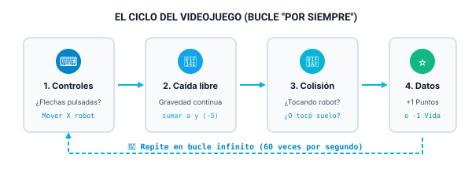
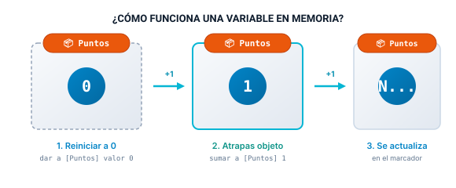

Proyecto 2: Robot Recolector (Atrapa Objetos con Marcador)
Da el salto a los videojuegos interactivos en Scratch: programa el control continuo con teclado, gravedad artificial, números aleatorios para posiciones impredecibles y variables en memoria para gestionar Puntos y Vidas.
🎯 1. El Objetivo del Videojuego
Prueba la simulación en tiempo real. Utiliza las teclas de flecha Izquierda ⬅️ y Derecha ➡️ (o los botones de pantalla) para controlar al robot y atrapar las celdas de energía:
Reglas de la simulación:
- El Robot Recolector patrulla la base moviéndose horizontalmente en el eje X.
- Caen celdas de energía desde el cielo en posiciones horizontales aleatorias.
- Si el robot intercepta la celda antes de caer: +1 Punto y sonido de éxito.
- Si la celda sobrepasa la línea inferior (toca el suelo): -1 Vida y sonido de fallo.
- Al perder las 3 vidas, el juego se detiene automáticamente (Game Over).
🧠 2. Las Herramientas del Programador (Conceptos Clave)
Para crear un videojuego interactivo en Scratch, necesitamos aprender cinco superpoderes lógicos que van más allá de una animación:
El Ciclo Principal del Videojuego: Bucle "Por Siempre"
En el Proyecto 1 usamos repetir (10) porque sabíamos exactamente cuántas veces saltaría el gato. Pero en un videojuego no sabemos cuándo el jugador pulsará una tecla ni cuánto durará la partida.
Por eso, el corazón de cualquier videojuego profesional es el Game Loop: un bucle continuo que se ejecuta unas 60 veces por segundo escuchando las teclas, actualizando posiciones y verificando colisiones.

Control Continuo con Teclado: Condicionales en Bucle
Para mover al robot de forma suave a izquierda y derecha, combinamos un bloque condicional si <...> entonces con el sensor azul claro ¿tecla [flecha] presionada?.
El Azar en la Programación: Posiciones Impredecibles
Si las celdas de energía cayeran siempre en el mismo punto de la pantalla, el juego sería monótono y aburrido. Para crear emoción, utilizamos el operador verde número aleatorio entre (-200) y (200).
Recordando que el escenario mide de -240 a +240 en el eje X, al elegir un número al azar entre -200 y 200 nos aseguramos de que el objeto aparezca en cualquier columna sin salirse por los bordes laterales.
Variables: La Memoria del Programa
Una variable es como una caja con una etiqueta pegada donde guardamos un dato que puede cambiar a lo largo de la partida (como los puntos de un marcador o el dinero en un juego).

En Scratch trabajamos con variables en la categoría de color Naranja Oscuro:
- dar a [Puntos] el valor (0): Inicializa la variable al arrancar la partida con la bandera verde.
- sumar a [Puntos] (1): Incrementa el valor actual de la caja cada vez que ocurre un acierto.
- sumar a [Vidas] (-1): Resta una unidad cuando el jugador falla.
Sensores de Contacto y Límite de Suelo
Para saber si el robot ha atrapado el objeto, preguntamos en cada instante con el bloque sensor <¿tocando [Robot]?>.
Y para saber si ha tocado el suelo, comprobamos si su altura en el eje Y ha bajado más allá del límite inferior (<posición en y < -160>).
🛠️ 3. Misiones Guiadas para Construir tu Videojuego
Abre el editor de Scratch en scratch.mit.edu y sigue estas 5 misiones en orden:
Misión 1: Prepara los Actores y el Escenario
1. Abre Scratch y elige un fondo tecnológico o espacial (por ejemplo Space City, Stars o Neon Tunnel).
2. Objeto 1 (El Recolector): Puedes usar un robot, el tazón clásico (Bowl) o el propio gato de Scratch. Cambia su nombre a Robot y colócalo abajo del escenario.
3. Objeto 2 (El Elemento que Cae): Elige un objeto para atrapar (como Apple, Star o Crystal). Cambia su nombre a Energia y ajusta su tamaño al 70% o 80%.
Misión 2: Programa el Movimiento del Robot
Selecciona el objeto Robot. Fija su altura inicial en el suelo (por ejemplo y: -140) y coloca el bucle continuo que escucha las flechas:
Misión 3: Programa la Caída Libre y Reaparición
Selecciona el objeto Energia. Al empezar, debe colocarse arriba del todo en una coordenada X al azar y caer constantemente restando a su coordenada Y:
Misión 4: Crea la Variable "Puntos" y la Captura
1. En la barra izquierda, entra en Variables y pulsa en "Crear una variable" con el nombre Puntos.
2. Al inicio del programa, pon dar a [Puntos] el valor (0).
3. Dentro del bucle del objeto que cae, añade la condición: si toca al Robot, reproducir sonido, sumar 1 a Puntos y teletransportar el objeto de nuevo a la parte superior.
Misión 5: Sistema de Vidas y Game Over
1. Crea otra variable llamada Vidas e inicialízala a 3.
2. Comprueba si el objeto toca el fondo: si <posición en y < -160>, restar 1 vida y reaparecer arriba.
3. Añade la condición de derrota: si <Vidas = 0>, decir "¡Fin del juego!" y usar el bloque rojo detener [todos].
🔍 4. Pistas y Código de Referencia
Si tienes dudas sobre cómo encajan los bloques, despliega las pistas para verificar la lógica de tus objetos:
Si al tocar el robot el marcador sube de 0 a 15 de repente, significa que el objeto sigue tocando al robot en cada vuelta del bucle. Para solucionarlo, inmediatamente después de sumar a puntos debes reposicionar el objeto arriba con ir a x: (azar) y: (170).
Utiliza el operador verde menor que (<): <posición en y < -160>. La píldora azul posición en y se encuentra al final de la categoría de Movimiento.
Este es el script completo que se coloca dentro del objeto Energia (o manzana):
🚀 5. Desafíos Pro (Ampliación)
¿Tu videojuego básico ya funciona? Atrévete con estas mejoras para convertirlo en un juego arcade completo:
Dificultad Progresiva
Crea una variable Velocidad que empiece en 5. Cada vez que consigas 5 puntos, aumenta la velocidad para que caiga más rápido y el juego sea más desafiante.
Objeto Trampa (Bomba)
Añade un tercer objeto peligroso que también caiga del cielo. Si el robot lo toca por error, en lugar de sumar puntos ¡te restará 1 vida o 3 puntos!
Modo Contrarreloj
Crea una variable Tiempo que inicie en 30 segundos. Con un bucle que espere 1 segundo y reste 1 a Tiempo, ¿cuántos puntos puedes conseguir antes de que el cronómetro llegue a cero?
📝 6. Test de Autocomprobación
Responde a estas preguntas para asegurarte de que has comprendido la lógica del proyecto:
1. ¿Qué diferencia hay entre "dar a [Puntos] el valor 0" y "sumar a [Puntos] 1"?
2. ¿Por qué es fundamental que la comprobación de teclas esté dentro de un bloque "por siempre"?
3. ¿Qué operador usarías para que un objeto aparezca en una columna horizontal distinta cada vez?
4. Si el objeto cae con 'sumar a y (-5)', ¿qué condición indica que ha tocado el suelo?
📦 7. Materiales del Proyecto para Descargar
Descarga los sprites con fondo transparente y efectos de audio para importarlos directamente en Scratch:
Robot Recolector
Personaje principal controlado por el jugador con bandeja superior.
📥 Descargar SVG
Celda de Energía
Elemento que cae del cielo y suma +1 punto al atraparlo.
📥 Descargar SVG
Bomba / Obstáculo
Elemento de peligro para el Desafío Pro (resta vidas si lo tocas).
📥 Descargar SVG
Sonido "Collect"
Efecto de sintetizador al capturar una celda de energía con éxito.
📥 Descargar WAVSonido "Fallo / Boing"
Efecto sonoro cuando la energía toca el suelo o se pierde una vida.
📥 Descargar WAV